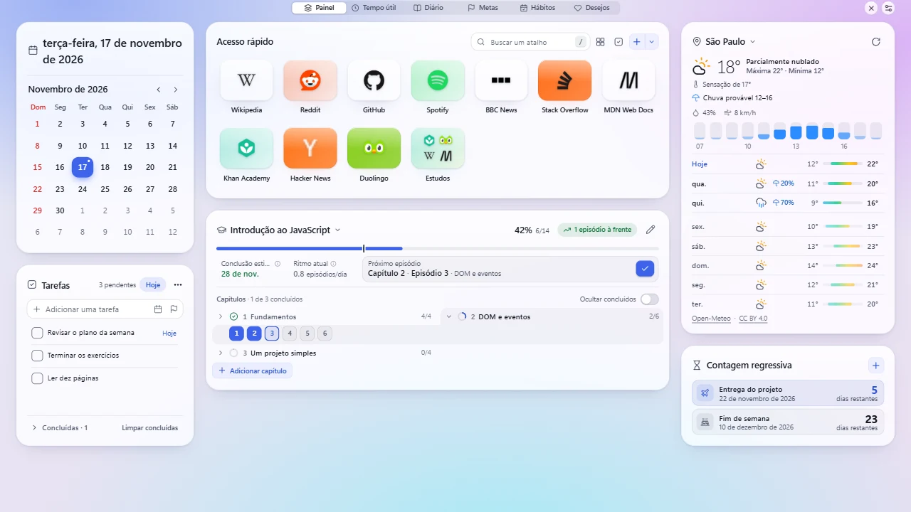
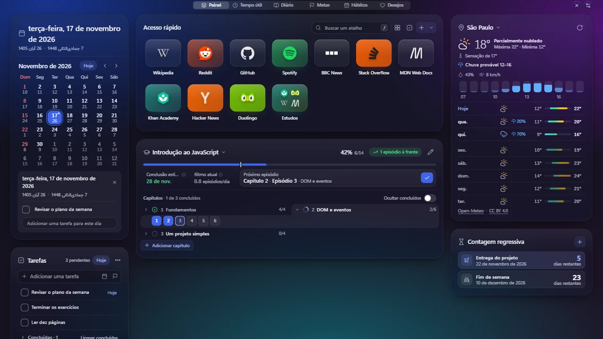

Sua nova guia do Chrome com atalhos e tarefas
Abra uma nova guia para acessar os sites que você mais usa e conferir o que precisa fazer hoje. No Tivona, você pode escolher uma data no calendário, incluir uma tarefa e iniciar o timer quando for a hora de trabalhar nela.
Grátis para o Chrome no computador. O Tivona substitui a página de nova guia e funciona sem uma conta do Tivona.

Tenha seus favoritos e o plano do dia à mão
Atalhos para sites e pastas de favoritos
Separe os sites de estudo, trabalho ou lazer em pastas. Use o teclado para encontrar um atalho ou importe uma pasta dos favoritos do Chrome.
Lista de tarefas com prazo e prioridade
Registre o prazo, a prioridade, anotações e etapas de cada tarefa. Veja o que vence hoje e o que está atrasado, ou escolha uma data no calendário para consultar as tarefas daquele dia.
Calendários gregoriano, persa e islâmico
Consulte datas no calendário mensal. Você pode usar o gregoriano, o persa (jalali) e o islâmico (hijri) e exibir mais de um na mesma visualização. A visualização persa mostra feriados do Irã.
Timer Pomodoro e registro do tempo de foco
Defina a duração do foco e das pausas ou use o cronômetro. Abra uma tarefa para iniciar o timer e registrar quanto tempo você dedicou a ela.

Escolha quais widgets aparecem no painel. Você pode consultar a previsão do tempo, criar contagens regressivas, acompanhar hábitos, metas e cursos ou escrever no diário.
Configure sua primeira guia
- Instale o Tivona pela Chrome Web Store e abra uma nova guia.
- Adicione um site aos atalhos ou defina um prazo para uma tarefa.
- Nas configurações, escolha o idioma, o calendário e os widgets que deseja mostrar.
Perguntas frequentes
Posso importar os favoritos do Chrome?
No painel de acesso rápido, escolha a opção de importar dos favoritos do Chrome. O Tivona pede permissão e copia a pasta que você selecionar.
Já uso uma extensão de nova guia. O que acontece?
O Chrome permite que uma extensão controle a nova guia por vez. Na página de extensões do Chrome, você pode escolher quais ficam ativadas.
Como levo minhas tarefas para outro computador?
Em Configurações → Dados, exporte um backup e restaure esse arquivo no Tivona do outro computador. O backup inclui sua lista de tarefas.
Uso off-line e privacidade
O calendário, as tarefas, o diário e o timer funcionam off-line. A abertura de sites e a obtenção de previsões ou ícones on-line exigem conexão.
Suas tarefas, seu diário e seu histórico de foco ficam neste dispositivo. Alguns atalhos e configurações podem usar a sincronização do Chrome quando ela está ativa. Nas versões configuradas para PostHog, o compartilhamento de dados de uso é opcional e vem desativado. Política de privacidade (em inglês)
Ajuda e comentários
Para recuperar dados após uma atualização, abra Configurações → Dados → Backups automáticos. Se precisar de ajuda, escreva para o suporte do Tivona ou use a seção de suporte da página na Chrome Web Store.